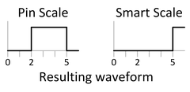

Defining waveform shapes for Smart Scale pins
The main difference between legacy and Smart Scale waveforms is that there are now separate sets of edges for drive actions and for tri-state actions. There are thus 16 drive edges each of which can be associated with a different delay. Waveforms for Smart Scale pins can be specified in two formats.
Modified standard format
In this format, the edges for switching the normal driver level are denoted by fi (f for "fast"), the tri-state edges by si (s for "slow"); these edge notations replace the former di notation. This format is also supported by the firmware command WFDS. The only admitted action codes are 1, 0 and N.
The old di notation can also still be used; it is internally converted into a pair of an f- and an s-edge. But note that the di notation and the fi, si notation cannot be mixed in one and the same PINS block.
Edge ordering
In contrast to Pin Scale pins, drive edges for Smart Scale pins are not subject to any edge ordering restrictions. The restrictions for receive edges are the same as for the legacy PS800/3600 (HSM2200/HSM3600) pins (see Restrictions for receive edges).
"d1:0 d2:1 d3:0" with the delays
d1=0, d2=5, und d3=2. The following figure
shows the different results on a Pin Scale and on a Smart Scale system: 
Observe that on the Smart Scale system, the action that is associated with an edge is always executed at the position that is defined for that edge. But on the Pin Scale system, the action that is associated with d2 is executed at the position of d3. This is known as "edge scrambling" or "edge disorder".
Native Smart Scale format
The native Smart Scale format generalizes the "edge-free" format used for the legacy PS3600 fast pins. For pure drive pins, the waveform is defined by two character strings, one for actions at fast edges, and the other for actions at slow edges. Thus, the format is
<waveform_index> "<f_edge_actions>" "<s_edge_actions>"
For pure receive pins, the waveform is again defined by two strings. One of them specifies the actions at the receive edges; the second serves to start and stop window compare actions. The window compare string is optional. Thus the format is
<waveform_index> "<compare_actions>" ["<start_stop_window_compare>"]
The allowed action codes are the same as for PS3600 fast pins.
Waveforms for an IO pin can contain the two drive action strings and the receive action string, or all four strings. This holds even if the waveform is a pure drive or receive waveform. In this case the two drive strings, or the receive string, can be empty, or they can be filled with dots. The dot stands for "no action". Thus the format is
<waveform_index> "<f_edge_actions>" "<s_edge_actions>" "<compare_actions>" ["<start_stop_window_compare>"]
As with PS3600 fast pins, the edge number corresponds to the position of the action within the respective string.
Example
The following example shows a wavetable fragment for a Smart Scale pin in its native format:
WAVETBL "wavetable 1" PINS DS0 0 "10" "0." 110 1 "101" "0.." 101 PINS DS1 0 "0" "0" 0 PINS Q0 0 "XXL" "..." XXL 1 "HLH" "..." HLH 2 "XLH" "..." XLH 3 "H.H" "10." HCMP PINS IO1 TTMODE X4 0 "...." "...." "LHLH" LHLH 1 "...." "...." "XLXH" XLXH 2 "0110" "0..." "XXXX" 0110
The dots stand for "no action".
If you retrieve these definitions with WFDS?, the reply will look as follows:
> wfds? 101,all,,(DS0) < WFDS 101,0,,"f1:1 f2:0 s1:0",(DS0) < WFDS 101,1,,"f1:1 f2:0 f3:1 s1:0",(DS0) > wfds? 101,all,,(DS1) < WFDS 101,0,,"f1:0 s1:0",(DS1) > wfds? 101,all,,(Q0) < WFDS 101,0,,"r1:EX r2:EX r3:E0",(Q0) < WFDS 101,1,,"r1:E1 r2:E0 r3:E1",(Q0) < WFDS 101,2,,"r1:EX r2:E0 r3:E1",(Q0) < WFDS 101,3,,"r1:W1 r2:WC r3:E1",(Q0) > wfds? 101,all,,(IO1) < WFDS 101,0,,"r1:E0 r2:E1 r3:E0 r4:E1",(IO1) < WFDS 101,1,,"r1:EX r2:E0 r3:EX r4:E1",(IO1) < WFDS 101,2,,"f1:0 f2:1 f3:1 f4:0 s1:0 r1:EX r2:EX r3:EX r4:EX",(IO1)
Note
that waveform 3 for pin Q0 contains a window compare. Note also that the
waveforms are returned in the modified standard format although they are coded in the pure Smart
Scale format in the wavetable.
Functional changes
- Introduced in SmarTest 7.0.1